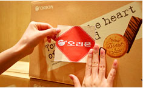
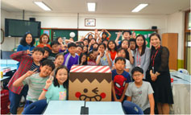
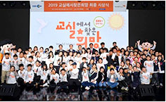
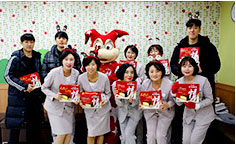

사회공헌
오리온은 사회의 구성원으로서 사회적 책임을 다하기 위해
자사 제품 기부, 임직원 참여 봉사활동, 그룹 재단을 통한 공익사업 등
따뜻한 정(情)을 나누는 사회공헌활동을 꾸준하게 펼치고 있습니다.
-

오리온 제품 기부 활동
오리온은 지역사회 및 취약계층을 대상으로 자사의 맛있고 품질 좋은 제품을 공인기관과
협력하여 매년 지속적으로 기부, 후원하고 있습니다. 윤기경영 선포 이후 지속적으로
지역사회를 대상으로 기부를 시행하고 있으며, 사회적 재난 상황 발생 시에도 기부를
진행함으로써 오리온의 정나눔 가치를 꾸준히 실현해나가고 있습니다.
-

오리온 정(情)나눔 사회봉사활동
오리온은 정(情)나눔을 테마로 임직원 참여형 사회봉사활동을 지속시행하고 있습니다.
'따뜻한 정나눔'을 테마로 본사및 각 사업장이 속해있는 지역구 내 지역아동센터를 대상으로
아동 정서함양 및 아동 꿈찾기를 위한 체육교실, 문화체험 등 다양한 사회봉사활동으로 시행하고 있으며,
'푸른 정나눔'을 테마로 지역별 환경이슈를 고려한 친환경 사회봉사활동 등도 지속하고 있습니다.
-

오리온재단 공익사업
오리온은 그룹 공익재단인 '오리온재단'의 공익사업을 지원하기 위하여 매년
출연금을 기부하고 있으며, 오리온재단은 해당 출연금을 통하여 저소득층 및
아동에 대한 지원사업, 저개발 국가에 대한 지원사업 등을 펼치고 있습니다.
-

고양 오리온 오리온스 사회공헌활동
프로농구단'고양 오리온 오리온스'는 연고지(고양시)를 기반으로 다양한 사회공헌활동을 시행하고 있습니다.
연고지 의료기관인 일산 백병원과 후원협약을 체결하고 경기 수익금을 난치병 어린이의 치료비로 지원하고
있으며, 병원 방문 봉사 및 어린이환우를 홈경기에 초청하고 있습니다. 또한 지역내 학교에 찾아가서 함께
스포츠활동을 수행하고 농구대를 기증하는 스쿨어택 행사도 지속 시행하고 있습니다.